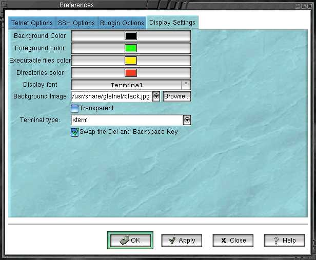

GTelnet

The followings are configurable colors for the terminal:
-
Background color.
-
Foreground color.
-
Executable files color.
-
Directories color.
Display font. Change the display font.
Background image. The background image of the terminal window.
You can set it with an image of JPEG, GIF, or XPM format.
Transparent. Click there if you'd like to make the background
transparent
Terminal type. Click the pulldown menu and select one of the
most appropriate terminal type. xterm is the default option.
Swap the Del and Backspace key. Check the button if you'd like
to swap those keys. It is more convenient for me when I choose that option.
Home